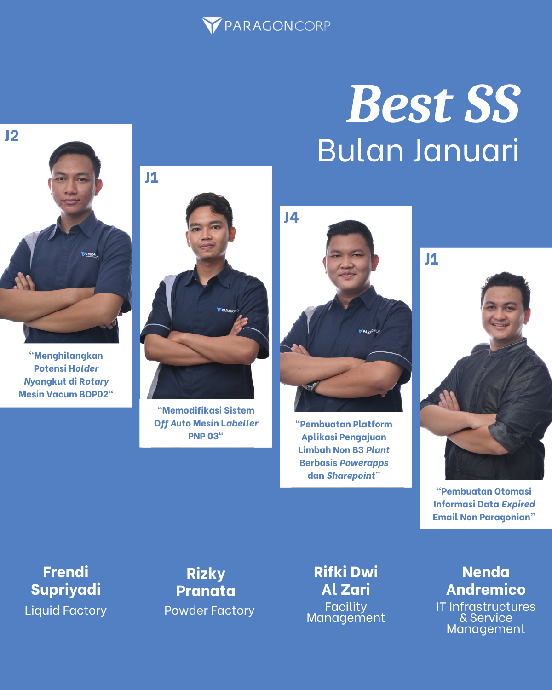
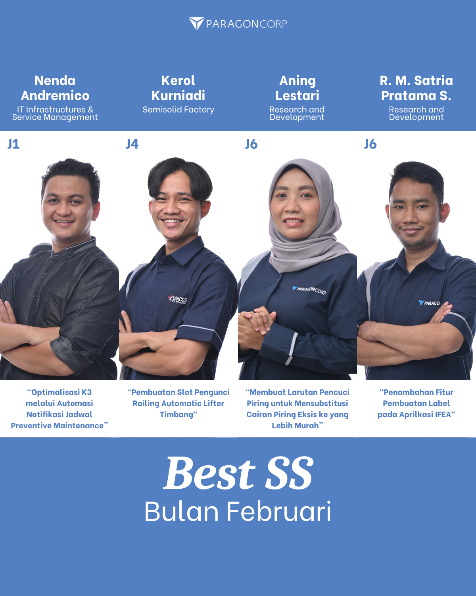
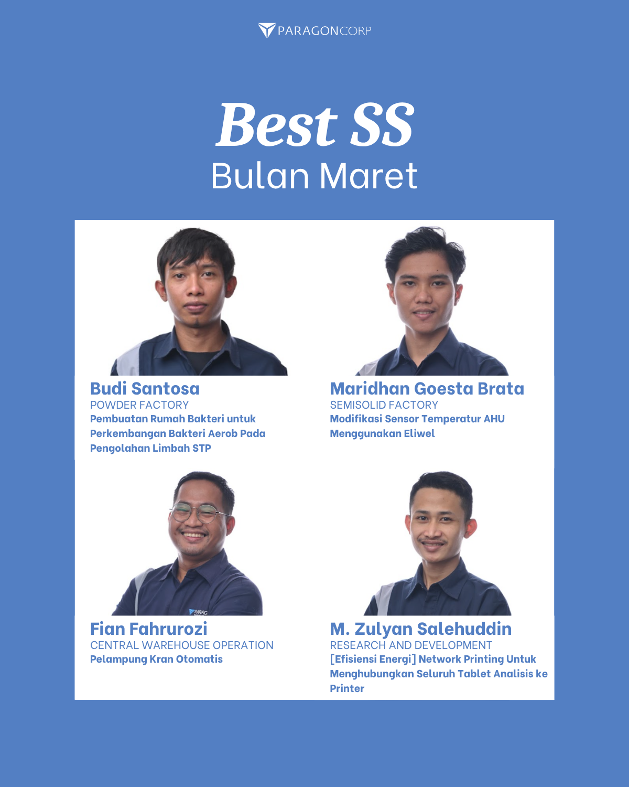
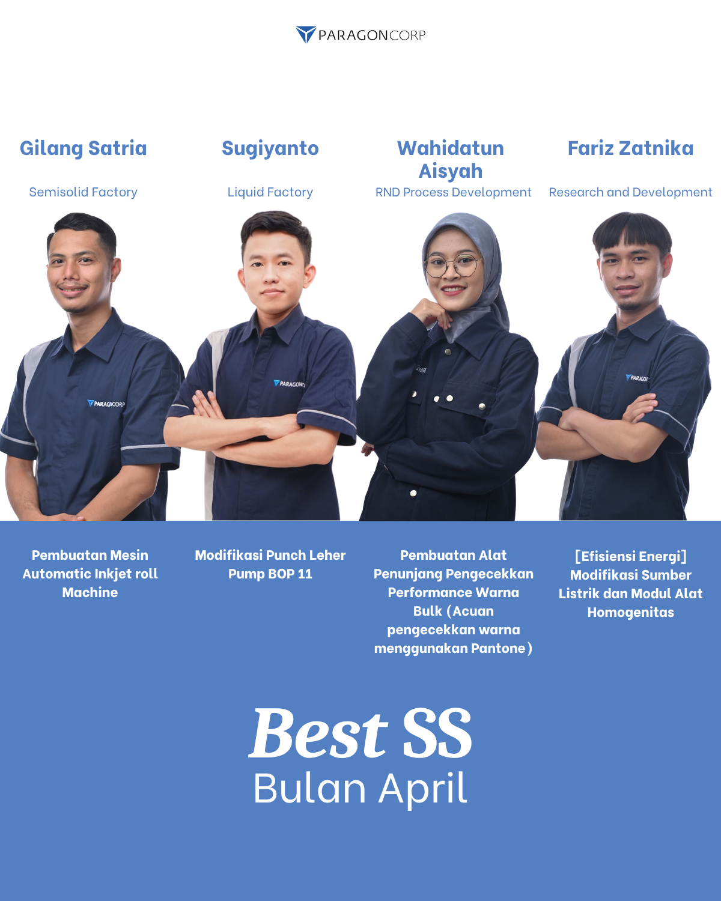

Apa itu Sumbang Saran?
Sumbang Saran adalah salah satu tools yang dapat digunakan oleh Paragonian
untuk mengajukan ide-ide improvement di area kerja masing-masing.
Manfaat Sumbang Saran
Secara lebih luas, Sumbang Saran bermanfaat dalam hal berikut:
- Peningkatan produktivitas kerja.
- Penghematan energi, material, dan sumber daya lainnya.
- Perbaikan lingkungan kerja.
- Perbaikan mesin, peralatan, dan proses.
- Perbaikan kualitas produk, dan lain-lain.
Namun hal yang perlu diperhatikan, bahwa saran dari individu sebagian besar
memberikan manfaat pada peningkatan moral, perbaikan kinerja, dan pembelajaran atas
pengalaman kerja.
Aturan dalam Membuat Sumbang Saran
Kriteria Sumbang Saran yang benar:
- Harus merupakan ide perbaikan terkait pekerjaan sehari-hari dan masih
dalam kewenangan departemen pengusul.
- SS diajukan oleh 1 orang pengusul (Paragonian level operasional).
- SS bisa merupakan:
- Ide orisinal yang belum pernah ada sebelumnya.
- Modifikasi dari contoh penerapan di tempat lain yang
disesuaikan dengan lokasi kerja.
Pembuatan Sumbang Saran
Secara garis besar, pembuatan SS mengikuti alur berikut:
1
GO & SEE
Identifikasi Masalah
- Amati permasalahan yang terjadi di sekitar area kerja.
- Perhatikan apakah ada ketidaksesuaian yang terjadi.
- Catat list masalah dan diskusikan dengan superior terkait prioritas.
- Lakukan stratifikasi/pengkategorian masalah yang muncul.
2
WHY–WHY
Analisa Sebab
- Lakukan proses why–why analysis atau metode analisis sederhana lain.
- Tujuannya untuk menemukan akar penyebab permasalahan.
3
IDEATION
Pembuatan Sumbang Saran
- Buat rencana improvement sederhana untuk mengatasi masalah.
- Ide bisa baru, duplikasi, atau modifikasi dari improvement sebelumnya.
4
IMPLEMENTATION
Pembuatan Laporan
- Dokumentasikan keadaan sebelum dan sesudah improvement.
- Deskripsikan manfaat atau benefit yang diperoleh.
Implementer Sumbang Saran Terbaik
Highlight implementer Sumbang Saran terbaik setiap bulan.

Januari 2025

Februari 2025

Maret 2025
